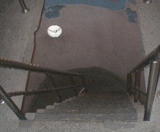
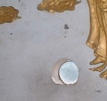
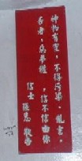
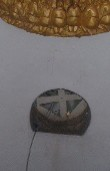
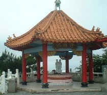
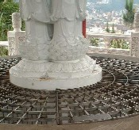
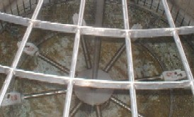

台湾の太平洋側に基隆という軍港がある。基隆は中国語でチーロンであるが、むかし日本人がキールンと発音した。それが定着して、対外的にはキールンと発音される。その基隆へタクシーで出かけたが、途中に中正記念公園という公園があった。なんだか門がすてきだったので途中下車してみた。
雰囲気は公園というより仏教寺院のよう。じっさい入り口をくぐると、境内の中央には高さ20mか30mくらいの大きな観音様が鎮座、その両脇には これまた大きなコンクリート製の狛犬。仏教寺院のよう
というより完全にお寺さんモードだった。
観音像の奥側にある本堂に お参りしたあと、そこにいた公園の人と いろいろ話していると、「あの観音像の中は空洞になっていて、階段で頭の部分まで昇ることができる。額（ひたい）には覗き窓がある。観音像は軍港の方を向いているので、穴から覗くと軍港の様子が手に取るように見える」と云う。
おお、それは！ ぜひ登ってみようというので、さっそく観音像にむかった。観音像の中に入るのは無料であるが、観音像を出るときに喜捨を行う。足下にある入り口から観音像の中に入ると、階段は こんな感じ。ものすごく急で、ロートルには こたえた。(T_T)

踊り場ごとに覗き窓が設けてある。しかし全部 観音像の裏側にある。一応 覗いてみたが、公園の裏山が見えるだけ。

踊り場には次のように書かれた掲示板もあった。「神物有霊 不得汚染 亂書 否者 悪夢纏 信不信由イ尓（神様には霊がある。落書きすると悪夢にうなされる。信じるか信じないかは あなた次第）」。

踊り場に着くたびに一休みしながら、青息吐息でようやく頭部にたどりついた。ふぅふぅ云いながら覗き窓の前にくると、なんと そこは塞がれていた。(゜０゜)
たぶん軍港の様子を見られたくないからだろうが、とんだ骨折り損だった(T_T) 出るときに喜捨箱があった。期待外れだったのでスルーしようかと思ったけれど、バチが当たるといけないので、ちゃんと入れといた。(^-^；

観音像を出て境内を見回すと、なんか隅の方に東屋がある。真ん中に井戸みたいなものがあって、その上にまた小さな観音さまが建っている。

近よってみると、井戸の上に金網が。

覗いてみると、数メートル下の井戸の底で 手の形をした皿が回っていた。どうやらお賽銭の受け皿らしい。それぞれの手のひらの上には硬貨が乗っているが、井戸の底には乗せそこなったお賽銭がたっぷり。どうやら
うまく手のひらに乗ると ご利益があるということらしい。,さっそくσ(-_-)も何枚か試してみたが、全部外れた。そのせいかどうか分からないけど、その後
着いた基隆の駅階段で、思いっきり ぶち転んだ。

|